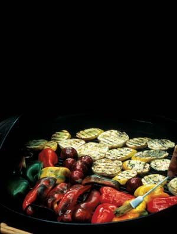
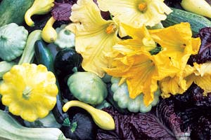
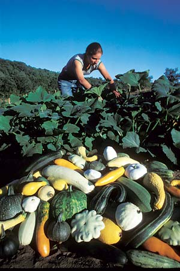
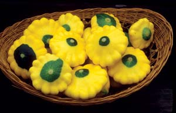
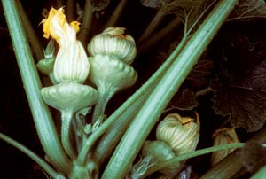

Surefire Summer Squash
Expert advice, plus a secret to great flavor revealed!
By Barbara Pleasant
June/July 2007
It’s a rare gardener whose planting plan does not include summer squash, be they zucchini, yellow squash or scalloped pattypan types.
Many questions arise when considering your own squash patch: How much should you grow? Should you start with seedlings or plant the seeds directly in the garden? What can you do to keep insects at bay? Assuming you have a good year, what kinds of kitchen wizardry will you use to avoid squash burnout?
At first glance these questions may seem to have separate answers, but in fact they are closely related. For example, if you use double-duty growing techniques that deter insect pests and make the most of summer squash’s natural exuberance, you’ll need just four or five healthy plants to keep summer squash on your daily menu for more than a month - and stock up your freezer too. The key word here is “healthy,” but growing robust plants is easy … if you think like a squash.
Small Plantings, Big Harvests
Step one is to choose the best varieties for your garden, keeping in mind that all summer squash are flavor lightweights until they’re enhanced with seasonings. Or try a secret I only recently discovered - grill squash to greatly intensify its subtle flavors. Grilling sweats out water and caramelizes the sugars - try it, you’ll be amazed!
Summer squash varieties make up for frail flavor with their abundant yields, vibrant colors, great nutritional value and variable shapes. Young specimens of colorful yellow and green ‘Zephyr’ or ‘Sunburst’ squash are almost too beautiful to eat, while dark-skinned zucchini varieties, such as ‘Raven,’ have a high quota of lutein (an antioxidant that can prevent vision loss associated with aging). Squash is also a good source of fiber and potassium, as well as vitamins A and C. To save space in a small garden, try training a vining variety, such as ‘Costata Romanesca’ or ‘Tatume,’ up a sturdy trellis or fence. If you don’t have room to grow your own squash, buy your favorite varieties from farmers markets or roadside vegetable stands, and jump to “Summer Squash Recipe Roundup,” below.
Don’t worry if you end up buying several packets of seeds to get the diversity you want in a small planting, because summer squash seeds will remain viable for three to four years (or more) when stored under good conditions. Another option is to start with a mixture of varieties, such as the ‘Summer Squash Mix’ from The Cook’s Garden, or ‘Summer Scallop Trio’ and ‘Tricolor Mix’ zucchini from Renee’s Garden. If you’re worried about pollination problems in a small planting of different varieties, just think like a squash. Yellow squash or zucchini might tell you, “No worries, pollen from a pattypan is just fine with us!” Unless you plan to save seeds, it’s fine to mix them up.
Planting Seeds from a Squash's Perspective
The next decision is whether to start the seeds in pots or directly in the garden. If your squash seeds could talk, they’d say, “Oh no, not in the garden! As soon as we sprout those nasty squash bugs will find us. Besides, we’ll show you a special, magic secret if you plant us in roomy pots and give us plenty of compost.” The compost is important here, because it’s likely to host remnant populations of fungi and bacteria that form beneficial partnerships with summer squash roots. Once this spontaneous root myco-magic starts happening (myco means fungal), the squash root/fungi teams become geniuses at extracting moisture, phosphorus and other nutrients from the soil. (For more on myco-magic, search for Building Fertile Soil.)
For seedlings started in 3- to 4-inch pots, this process will continue without missing a beat if you set out the plants, without disturbing the roots, when they are about three weeks old (squash grows up very quickly), in warm soil that was amended with plenty of compost and a few handfuls of an organic fertilizer. Always choose a sunny spot and the squash seedlings will promptly begin unfurling their extensive array of solar collectors, which we call leaves.
Organic Controls for Squash Bugs
This is probably an anxious time for summer squashlets, because they’ve suddenly become sitting ducks to four formidable insect pests. “Please protect us from pests that want to destroy us,” the squash would plead if they could speak. When spotted or striped cucumber beetles fly in and get a taste of them, for example, they’ll call their comrades to come join the party. On the ground, squash bugs patrol for the host plants they crave. And on warm evenings, the squash plants will likely be discovered by fast-flying moths, whose larvae are dreaded squash vine borers - inch-long supermaggots that devour the spongy material on the inside of squash stems, ravaging them from the inside out.
None of these insects will damage your plants if they can’t reach them, so it’s time to cover them up with a floating fabric row cover, weighted down at the edges. Attach the row cover to a wire mesh tunnel to make it easier to secure, install and remove for weeding. You can buy row covers at garden centers, or make your own by stitching together two lengths of tulle or nylon net, sold at fabric stores. (See “Extend Your Growing Season,” February/March 2007, for more on making tunnels.) Give the plants a good drenching, and mulch between them to deter weeds before you install the bug cover. Then, you’re pretty much home free for the early growing stage.
Happy Endings
When you start seeing female flowers, it’s time to remove your bug cover so bees and other little pollinators can carry pollen between the boy and girl flowers, which should be plentiful thanks to your compost. Male flowers are attached to straight green stems, while female flowers sit atop the tiny little squash. One of the things we know about the myco-magic of squash is that plants use the nutritional goodies picked up in a biologically active rhizosphere (the soil right around the roots) to produce lots of big, viable pollen grains. And lots of big pollen grains mean loads of fat squash to harvest. Your uncovered plants eventually will be found by borers, beetles and squash bugs, but plants that were protected until they reached bearing size are strong enough to produce heavily, despite insect aggravation.
When my plants are showing signs of decline (usually from squash vine borer damage) and I’ve harvested all the summer squash I want, it’s time to stage a crackdown cleanup by spreading a large piece of clear plastic on the ground, piling on the pest-ridden plants, and quickly gathering it into a bundle. A few days in the hot summer sun kills anything living in there, leaving me with shrunken squash skeletons for my compost heap - an appropriate ending for my garden’s most prolific producer.
Control Cucumber Beetles with Trap Cropping
Trap cropping, in which pests are lured to plants they like in hopes they will leave others alone, is a tricky business. If the technique fails, you can end up with extremely high pest populations. But in Massachusetts and Connecticut, vegetable growers are finding that perimeter plantings of ‘Blue Hubbard’ squash are so attractive to cucumber beetles that more valuable squash and pumpkins grown nearby have up to 90 percent fewer beetles. Trap cropping can reduce squash vine borer damage as well. An excellent review of this technique can be found at www.uvm.edu/vtvegandberry/factsheets/PerimeterTC.html.
Summer Squash Recipe Roundup
The summer squash season begins with newly opened yellow-orange squash blossoms, which taste like mild spinach, and contain beta carotene and several other vitamins. Use small scissors to nip out the stamens before rinsing the blossoms and patting them dry. Then add the squash blossoms to soups, salads or omelets; stuff them with soft cheese; sauté them in oil; or slip them into the prettiest (and tastiest) cheese quesadillas you’ve ever made. You won’t hurt your squash harvest one bit by lifting the bug cover long enough to pick all the early blossoms, which are mostly males.
The most splattered pages in my copy of The Classic Zucchini Cookbook bear recipes that pair summer squash with herbs such as dill, basil and thyme. I avoid using my oven in summer, but sooner or later I must in order to make “zapple” pies, breads or muffins in which king-sized zucchinis masquerade as apples.
As for daily fare, at least twice a week I make a one-pot pasta salad that I call Pasta Pepo (named after summer squash’s botanical name, Cucurbita pepo). It goes like this: Cook any pasta according to package directions until two minutes before it’s done. Stir in bite-sized pieces of summer squash, bring back to boiling, and cook for another minute. Drain pasta, add fresh chopped herbs (thyme, sage, basil, cilantro and oregano are all great), and whatever else you have - halved cherry tomatoes, olives or a can of black beans - and toss with the salad dressing of your choice.
When using summer squash as a side dish, I often make chunky bread crumbs from stale bread or corn bread, season them with oregano or thyme, and sprinkle them over hot cooked summer squash along with a little grated hard cheese.
While in the throes of last year’s squash surge, I searched for more healthy summer squash recipes refined by the food pros at Cooking Light magazine. It was a revelation to discover that grilled squash recipes received five star ratings from most of the cooks who tried them. Of course! Grilling sweats out water, which helps to concentrate squash’s subtle flavors, plus it caramelizes sugars present in the squash or grilling sauces. Stocking my freezer with grilled rather than blanched squash is one of the best food preservation upgrades I have ever made. I also sun dry a few batches of summer squash chips. Once the water’s gone from thin slices of summer squash, they become savory cures for late-night snack attacks.
Seed Sources
The Cook’s Garden
P.O. Box C5030
Warminster, PA 18974
(800) 457-9703
Johnny’s Selected Seeds
955 Benton Ave.
Winslow, ME 04901
(877) 564-6697
Renee’s Garden
6116 Highway 9
Felton, CA 95018
(888) 880-7228
Sand Hill Preservation Center
1878 230th St.
Calamus, IA 52729
(563) 246-2299
A dedicated fan of summer squash, contributing editor Barbara Pleasant allows only three squash plants at a time in her North Carolina garden - or two if they are zukes.
|
 ROSALIND CREASY Grilling squash is a great way to enhance its subtle flavors. |
 DAVID CAVAGNARO Squash blossoms are edible, nutritious and colorful, and you can harvest all the male blossoms you want without damaging your crop. |
 DAVID CAVAGNARO Plant a mixture of squash varieties, such as the ‘Summer Squash Mix’ from The Cook’s Garden, or ‘Summer Scallop Trio’ or ‘Tricolor Mix’ zucchini from Renee’s Garden. |
 DAVID CAVAGNARO ‘Zephyr’ is a crookneck squash that’s as nutritious as it is lovely. |
 WILLIAM D. ADAMS ‘Sunburst’ is a tasty pattypan squash variety. |
 WILLIAM D. ADAMS Female flowers sit on top of new, baby squash. |
|
ROSALIND CREASY Newly opened yellow-orange squash blossoms taste like mild spinach, and are a wonderful addition to omelets. |
|
|